Plate 8
Earth rais'd up her head,
From the darkness dread & drear.
Her light fled:
Stony dread!
And her locks cover'd with grey despair.
Prison'd on watry shore
Starry Jealousy does keep my den
Cold and hoar
Weeping o'er
I hear the Father of the ancient men
Selfish father of men
Cruel jealous selfish fear
Can delight
Chain'd in night
The virgins of youth and morning bear.
Does spring hide its joy
When buds and blossoms grow!
Does the sower!
Sow by night?
Or the plowman in darkness plow!
Break this heavy chain,
That does freeze my bones around
Selfish! vain!
Eternal bane!
That free Love with bondage bound.
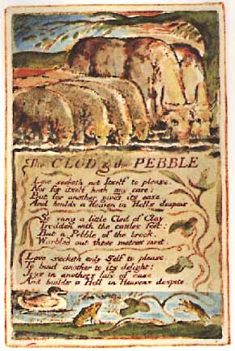
Plate 4
Love seeketh not Itself to please,
Nor for itself hath any care;
But for another gives its ease,
And builds a Heaven in Hells despair.
So sang a little Clod of Clay,
Trodden with the cattles feet:
But a Pebble of the brook,
Warbled out these metres meet.
Love seeketh only Self to please,
To bind another to Its delight:
Joys in anothers loss of ease,
And builds a Hell in Heavens despite.
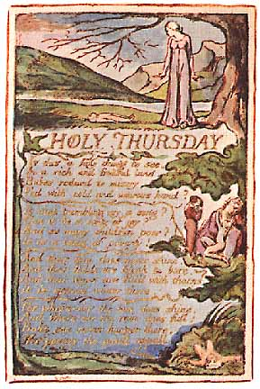
Plate 5
Is this a holy thing to see,
In a rich and fruitful land,
Babes reducd to misery,
Fed with cold and usurous hand?
Is that trembling cry a song!
Can it be a song of joy?
And so many children poor,
It is a land of poverty!
And their sun does never shine.
And their fields are bleak & bare.
And their ways are fill'd with thorns
It is eternal winter there.
For where-e'er the sun does shine,
And where-e'er the rain does fall:
Babe can never hunger there,
Nor poverty the mind appall.
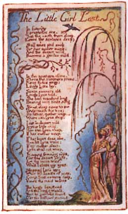
Plate 6
In futurity
I prophetic see,
That the earth from sleep,
(Grave the sentence deep)
Shall arise and seek
For her maker meek:
And the desart wild
Become a garden mild.
In the southern clime,
Where the summers prime,
Never fades away;
Lovely Lyca lay.
Seven summers old
Lovely Lyca told.
She had wanderd long.
Hearing wild birds song.
Sweet sleep come to me
Underneath this tree;
Do father, mother weep.
Where can Lyca sleep.
Lost in desart wild
Is your little child.
How can Lyca sleep,
If her mother weep.
If her heart does ake,
Then let Lyca wake;
If my mother sleep,
Lyca shall not weep.
Frowning frowning night,
O'er this desart bright,
Let thy moon arise,
While I close my eyes.
Sleeping Lyca lay;
While the beasts of prey,
Come from caverns deep,
View'd the maid asleep
The kingly lion stood
And the virgin view'd,
Then he gambold round
O'er the hallowd ground;
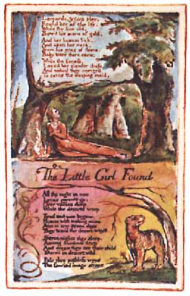
Plate 7
Leopards, tygers play,
Round her as she lay;
While the lion old,
Bow'd his mane of gold.
And her bosom lick,
And upon her neck,
From his eyes of Bame,
Ruby tears there came;
While the lioness,
Loos'd her slender dress.
And naked they convey'd
To caves the sleeping maid.
All the night in woe,
Lyca's parents go:
Over vallies deep,
While the desarts weep.
Tired and woe-begone,
Hoarse with making moan:
Arm in arm seven days,
They trac'd the desart ways.
Seven nights they sleep,
Among shadows deep:
And dream they see their child
Starved in desart wild.
Pale thro' pathless ways
The fancied image strays,
Plate 8
Famish'd, weeping, weak
With hollow piteous shriek
Rising from unrest,
The trembling woman prest
With feet of weary woe;
She could no further go.
In his arms he bore,
Her arm'd with sorrow sore;
Till before their way,
A couching lion lay.
Turning back was vain,
Soon his heavy mane,
Bore them to the ground;
Then he stalk'd around,
Smelling to his prey.
But their fears allay,
When he licks their hands;
And silent by them stands.
They look upon his eyes
Fill'd with deep surprise
And wondering behold,
A spirit arm'd in gold.
On his head a crown
On his shoulders down,
Flow'd his golden hair.
Gone was all their care.
Follow me he said,
Weep not for the maid;
In my palace deep,
Lyca lies asleep.
Then they followed,
Where the vision led:
And saw their sleeping child
Among tygers wild.
To this day they dwell
In a lonely dell
Nor fear the wolvish howl,
Nor the lions growl.
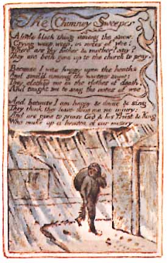
Plate 9
A little black thing among the snow:
Crying weep, weep, in notes of woe!
Where are thy father & mother! say!
They are both gone up to the church to pray.
Because I was happy upon the heath,
And smil'd among the winters snow:
They clothed me in the clothes of death,
And taught me to sing the notes of woe.
And because I am happy, & dance & sing,
They think they have done me no injury:
And are gone to praise God & his Priest & King
Who make up a heaven of our misery.
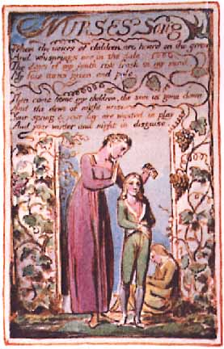
Plate 10
When the voices of children, are heard on the green
And whisprings are in the dale:
The days of my youth rise fresh in my mind,
My face turns green and pale.
Then come home my children, the sun is gone down
And the dews of night arise
Your spring & your day, are wasted in play
And your winter and night in disguise.
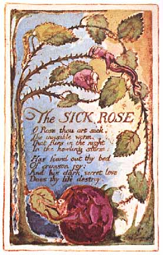
Plate 11
O Rose thou art sick.
The invisible worm,
That flies in the night
In the howling storm:
Has found out thy bed
Of crimson joy:
And his dark secret love
Does thy life destroy.
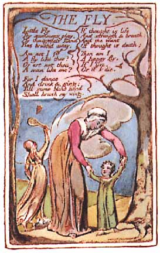
Plate 12
Little Fly
Thy summers play,
My thoughtless hand
Has brush'd away.
Am not I
A fly like thee?
Or art not thou
A man like me?
For I dance
And drink & sing:
Till some blind hand
Shall brush my wing.
If thought is life
And strength & breath
And the want
Of thought is death;
Then am I
A happy fly,
If I live,
Or if I die.
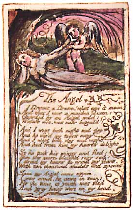
Plate 13
I Dreamt a Dream! what can it mean?
And that I was a maiden Queen:
Guarded by an Angel mild:
Witless woe, was ne'er beguil'd!
And I wept both night and day
And he wip'd my tears away
And I wept both day and night
And hid from him my hearts delight
So he took his wings and fled:
Then the morn blush'd rosy red:
I dried my tears & armed my fears,
With ten thousand shields and spears.
Soon my Angel came again;
I was arm'd, he came in vain:
For the time of youth was fled
And grey hairs were on my head.
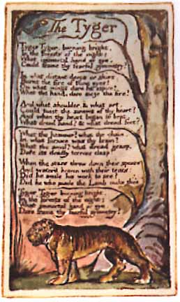
Plate 14
Tyger Tyger, burning bright,
In the forests of the night;
What immortal hand or eye,
Could frame thy fearful symmetry
In what distant deeps or skies.
Burnt the fire of thine eyes!
On what wings dare he aspire?
What the hand, dare sieze the fire!
And what shoulder, & what art.
Could twist the sinews of thy heart?
And when thy heart began to beat,
What dread hand! & what dread feet!
What the hammer! what the chain,
In what furnace was thy brain
What the anvil, what dread grasp,
Dare its deadly terrors clasp!
When the stars threw down their spear
And water'd heaven with their tears:
Did he smile his work to see
Did he who made the Lamb make thee!
Tyger Tyger burning bright,
In the forests of the night:
What immortal hand or eye,
Dare frame thy fearful symmetry!
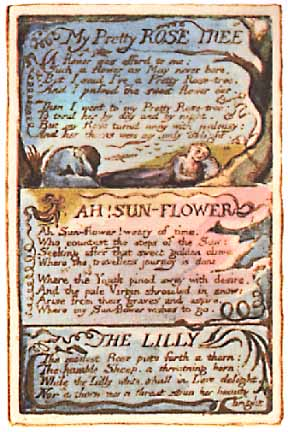
Plate 15
A flower was offerd to me;
Such a flower as May never bore.
But I said I've a Pretty Rose-tree!
And I passed the sweet flower o'er.
Then I went to my Pretty Rose-tree;
To tend her by day and by night.
But my Rose turnd away with jealousy:
And her thorns were my only delight.
Ah Sun-flower! weary of time,
Who countest the steps of the Sun:
Seeking after that sweet golden clime
Where the travellers journey is done.
Where the Youth pined away with desire,
And the pale Virgin shrouded in snow:
Arise from their graves and aspire,
Where my Sun-flower wishes to go.
The modest Rose puts forth a thorn:
The humble Sheep, a threatning horn:
While the Lilly white, shall in Love delight,
Nor a thorn nor a threat stain her beauty bright
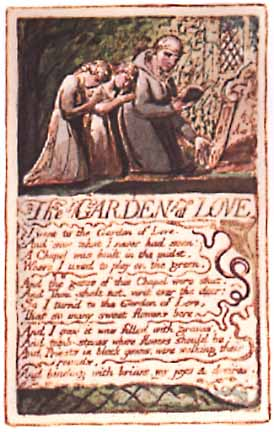
Plate 16
I went to the Garden of Love, of Love
And saw what I never had seen:
A Chapel was built in the midst,
Where I used to play on the green.
And the gates of this Chapel were shut,
And Thou shalt not. writ over the door;
So I turn'd to the Garden of Love,
That so many sweet Bowers bore.
And I saw it was filled with graves,
And tomb-stones where flowers should be:
And Priests in black gowns, were walking their rounds,
And binding with briars, my joys & desires.
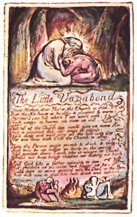
Plate 17
Dear Mother, dear Mother, the Church is cold,
But the Ale-house is healthy & pleasant & warm
Besides I can tell where I am use'd well,
Such usage in heaven will never do well.
But if at the Church they would give us some Ale
And a pleasant fire, our souls to regale;
We'd sing and we'd pray, all the live-long day;
Nor ever ance wish from the Church to stray,
Then the Parson might preach & drink & sing.
And we'd be as happy as birds in the spring:
And modest dame Lurch, who is always at Church
Would not have bandy children nor fasting nor birch.
And God like a father rejoicing to see,
His children as pleasant and happy as he:
Would have no more quarrel with the Devil or the Barrel
But kiss him & give him both drink and apparel.
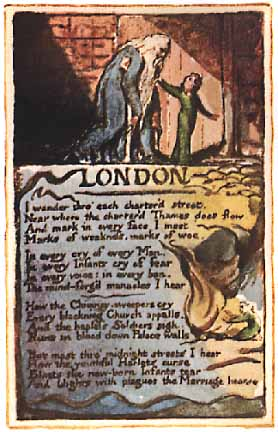
Plate 18
I wander thro' each charter'd street.
Near where the charter'd Thames does flow
And mark in every face I meet
Marks of weakness, marks of woe.
In every cry of every Man,
In every Infants cry of fear,
In every voice: in every ban,
The mind-forg'd manacles I hear
How the Chimney-sweepers cry
Every blackning Church appalls,
And the hapless Soldiers sigh
Runs in blood down Palace walls
But most thro' midnight streets I hear
How the youthful Harlots curse
Blasts the new-born Infants tear
And blights with plagues the Marriage hearse
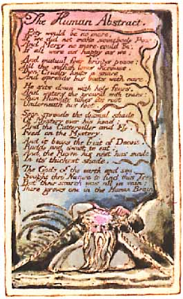
Plate 19
Pity would be no more,
If we did not make somebody Poor:
And Mercy no more could be,
If all were as happy as we;
And mutual fear brings peace;
Till the selfish loves increase.
Then Cruelty knits a snare,
And spreads his baits with care.
He sits down with holy fears,
And waters the ground with tears:
Then Humility takes its root
Underneath his foot.
Soon spreads the dismal shade
Of Mystery over his head;
And the Catterpiller and Fly,
Feed on the Mystery.
And it bears the fruit of Deceit,
Ruddy and sweet to eat;
And the Raven his nest has made
In its thickest shade.
The Gods of the earth and sea,
Sought thro' Nature to find this Tree
But their search was all in vain:
There grows one in the Human Brain
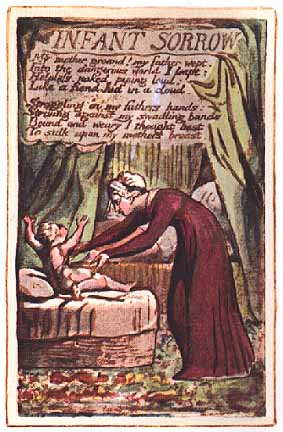
Plate 20
My mother groand! my father wept.
Into the dangerous world I leapt:
Helpless, naked, piping loud;
Like a fiend hid in a cloud.
Struggling in my fathers hands:
Striving against my swadling bands:
Bound and weary I thought best
To sulk upon my mothers breast.
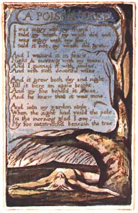
Plate 21
I was angry with my friend;
I told my wrath, my wrath did end
I was angry with my foe:
I told it not, my wrath did grow.
And I waterd it in fears,
Night & morning with my tears:
And I sunned it with smiles,
And with soft deceitful wiles.
And it grew both day and night.
Till it bore an apple bright.
And my foe beheld it shine,
And he knew that it was mine.
And into my garden stole,
When the night had veild the pole;
In the morning glad I see;
My foe outstretchd beneath the tree.
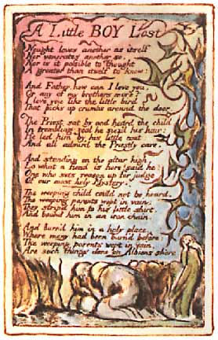
Plate 22
Nought loves another as itself
Nor venerates another so.
Nor is it possible to Thought
A greater than itself to know:
And Father, how can I love you,
Or any of my brothers more?
I love you like the little bird
That picks up crumbs around the door.
The Priest sat by and heard the child.
In trembling zeal he siez'd his hair:
He led him by his little coat:
And all admir'd the Priestly care.
And standing on the altar high,
Lo what a fiend is here! said he:
One who sets reason up for judge
Of our most holy Mystery.
The weeping child could not be heard.
The weeping parents wept in vain:
They strip'd him to his little shirt.
And bound him in an iron chain.
And burn'd him in a holy place,
Where many had been burn'd before:
The weeping parents wept in vain.
Are such things done on Albions shore.
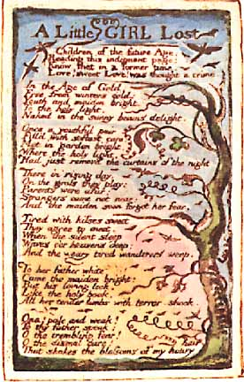
Plate 23
Children of the future Age,
Reading this indignant page:
Know that in a former time,
Love! sweet Love! was thought a crime
In the Age of Gold,
Free from winters cold:
Youth and maiden bright,
To the holy light,
Naked in the sunny beams delight
Once a youthful pair
Fill'd with softest care:
Met in garden bright,
Where the holy light,
Had just removd the curtains of the night
There in rising day,
On the grass they play:
Parents were afar:
Strangers came not near her fear.
And the maiden soon forgot
Tired with kisses sweet
They agree to meet,
When the silent sleep
Waves o'er heavens deep;
And the weary tired wanderers weep.
To her father white
Came the maiden bright: But his loving look,
Like the holy book,
All her tender limbs with terror shook.
Ona! pale and weak!
To thy father speak:
O the trembling fear!
O the dismal care!
That shakes the blossoms of my hoary hair
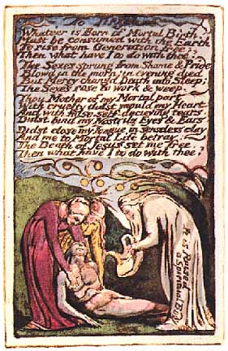
Plate 24
Whate'er is Born of Mortal Birth,
Must be consumed with the Earth
To rise from Generation free;
Then what have I to do with thee!
The Sexes sprung from Shame & Pride
Blow'd in the morn: in evening died
But Mercy changd Death into Sleep;
The Sexes rose to work & weep.
Thou Mother of my Mortal part.
With cruelty didst mould my Heart.
And with false self-decieving tears,
Didst bind my Nostrils Eyes & Ears.
Didst close my Tongue in senseless clay
And me to Mortal Life betray:
The Death of Jesus set me free,
Then what have I to do with thee!
[written sideways:] It is Raised a Spiritual Body
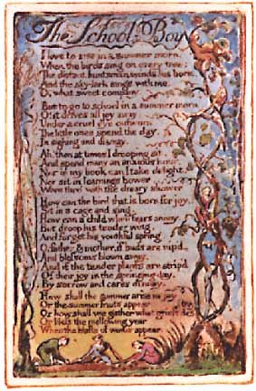
Plate 25
I love to rise in a summer morn,
When the birds sing on every tree;
The distant huntsman winds his horn,
And the sky-lark sings with me.
O! what sweet company.
But to go to school in a summer morn.
O! it drives all joy away;
Under a cruel eye outworn,
The little ones spend the day,
In sighing and dismay.
Ah! then at times I drooping sit,
And spend many an anxious hour.
Nor in my book can I take delight,
Nor sit in learnings bower,
Worn thro' with the dreary shower.
How can the bird that is born for joy,
Sit in a cage and sing.
How can a child when fears annoy,
But droop his tender wing,
And forget his youthful spring
O! father & mother, if buds are nip'd,
And blossoms blown away,
And if the tender plants are strip'd
Of their joy in the springing day,
By sorrow and cares dismay,
How shall the summer arise in joy.
Or the summer fruits appear.
Or how shall we gather what griefs destroy
Or bless the mellowing year,
When the blasts of winter appear.
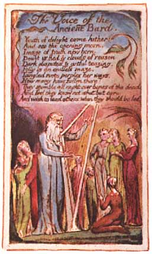
Plate 26
Youth of delight come hither:
And see the opening morn,
Image of truth new born.
Doubt is fled & clouds of reason
Dark disputes & artful teazing.
Folly is an endless maze,
Tangled roots perplex her ways,
How many have fallen there!
They stumble all night over bones of the dead;
And feel they know not what but care;
And wish to lead others when they should be led.
This web edition published by:
eBooks@Adelaide
The University of Adelaide Library
University of Adelaide
South Australia 5005